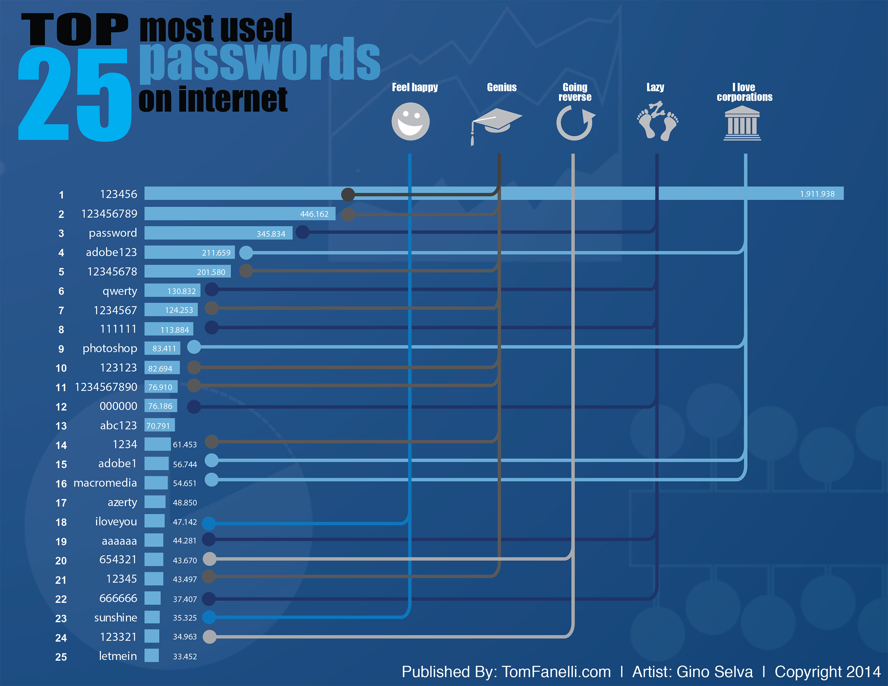
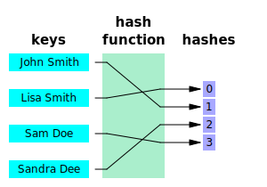

Bloom filters

{kind=link}
Me
Shane Tomlinson
Start with a problem

Top 25 Most Used Internet Passwords - An infographic by the team at Tom Fanelli - Infographic Marketing.Goal
Ban users from using one of the top 50k most common passwords.
Math(s) speak: determine if an item is a member of a set.
Ideas?
Constraints
- No data can be sent to the server.
- Download must be "reasonably" sized.
What data structures could we use?
Hash table
Create a bit array, hash entries to a position in array.

Image released to the public domain by Jorge Stolfi.
{kind=link}
Download hash table, run password through hash function, check if bit is set.
Hash table properties
- Worst case O(1) insertion and lookup
- Fixed size
- No need to re-balance
Drawbacks
- Collisions
- Not efficient for small sets
Collisions
- Inevitable. See birthday problem.
- Cause false positives.
Reducing collisions
- Expand the size of the hash table.
- Use more than one hash function.
What if the occasional false positive is OK?
Bloom filter
A Bloom filter is a space-efficient probabilistic data structure, conceived by Burton Howard Bloom in 1970, that is used to test whether an element is a member of a set.
It looks like an onion
Properties
- Has two primary functions, add and test.
- If an item is in the set, test will always return true.
- If an item is not in the set, test might return true.
- Rate of false positives is configurable.
Secondary properties
- Hash table can be downloaded and tested against.
- False positive rate of <1% uses ~9.6 bits per member.
- Supports union and intersection of two or more filters.
Nomenclature
- k
- number of hash functions.
- m
- size of hash table, in bits.
- n
- size of set.
Bloom filter algorithm
Create
- Create a bit array of size m.
- Fill bit array with all 0s.
Add
- Run item through k independent hash functions.
- Set the corresponding entries in the bit array to 1.
Test
- Run item through k independent hash functions.
-
Check the corresponding entries in the bit array.
- If all entries are 1, return true, otherwise return false.
K independent ... WTF?
K independent hash functions
Can be simulated with only two hash functions.
To find an arbitrary i:
hash(i) = (a + b * i ) % m
Where a is the result of Hash 1, b is the result of Hash 2, and m is the max value of the bit array.
Code
https://github.com/LondonAlgorithms/BloomfiltersResources
Wikipedia: https://en.wikipedia.org/wiki/Bloom_filter
MDN bit operations: https://developer.mozilla.org/en-US/docs/Web/JavaScript/Reference/Operators/Bitwise_Operators
MDN Uint32Array: https://developer.mozilla.org/en-US/docs/Web/JavaScript/Reference/Global_Objects/Uint32Array
Simulate k hashes with only 2: https://willwhim.wpengine.com/2011/09/03/producing-n-hash-functions-by-hashing-only-once/